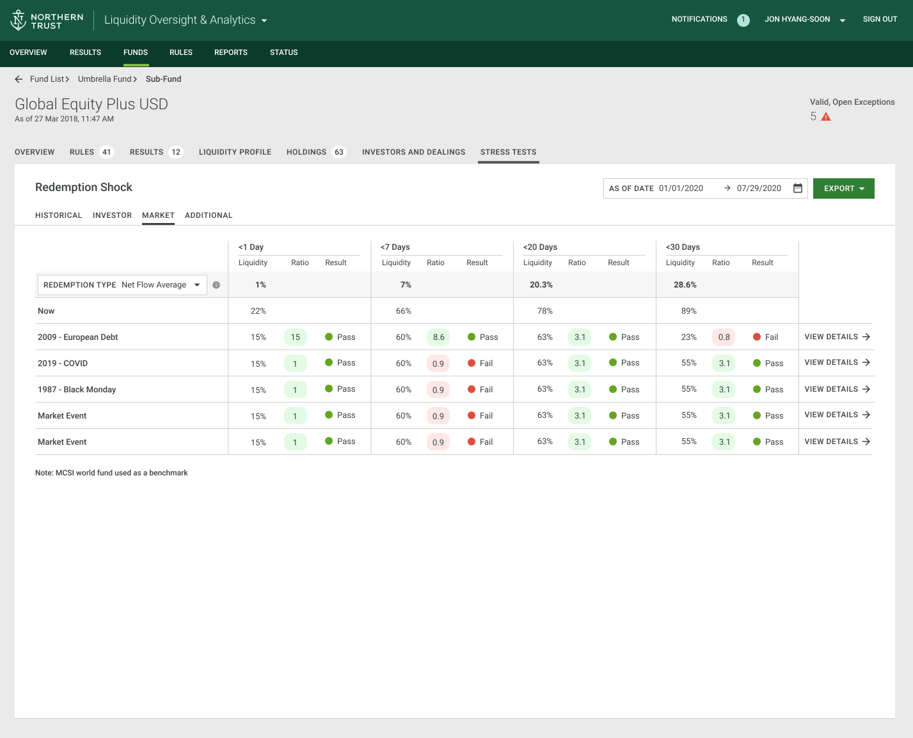
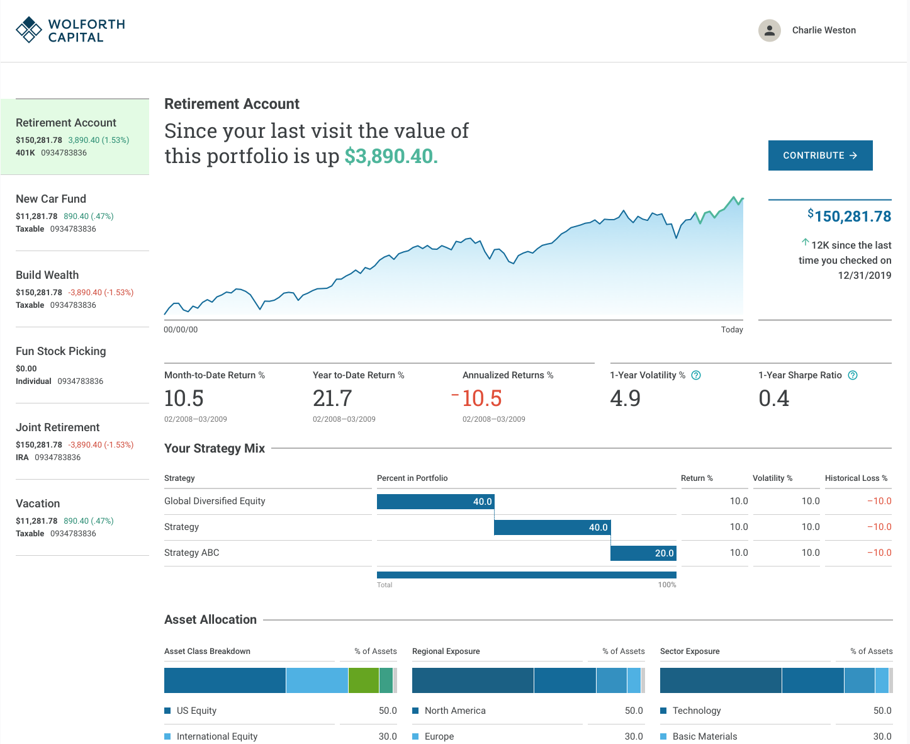

← All work
Northern Trust · Client Experience
Client Experiences for Asset Management
A selection of experiences created for Northern Trust that support client experiences.
- Role
- Design Director
- Domain
- Asset management
- Focus
- Data-rich client tools


